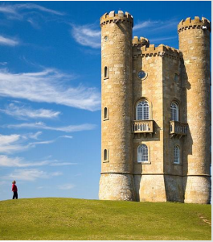

Seam Carving
Controls:
Left Click: Apply current resize/paint mode
1: Resize mode
2: Preserve mode: paint preservation regions
3: Delete mode: paint delete regions
4: Clear mode: clear regions of paint
Concept:
Seam Carving, also known as "Content-Aware Image Resizing" or "Liquid Rescaling", allows scaling of an image without stretching/shrinking artifacts. The algorithm works by calculating the lowest energy seams (in this case gradient magnitude energy) from one end of the image to the other and removing those first. This preserves the highest energy content, which in the case of the gradient magnitude are seams which include edges in the scene. Preservation and Deletion regions work by modifying the energy calculated to be higher or lower than natural so those regions become preferred or rejected for seam carving.
Credits:
Paper Referenced: "Seam Carving for Content-Aware Image Resizing"
Processing.org
